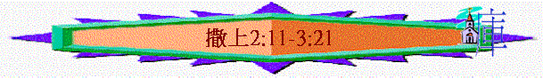

|
成 敗 與 興 衰 |
||
|
事 奉 |
民 族 |
君 王 |
|
1-3 |
4-7 |
8-31 |
一.事奉的成敗(1-3)
2.人的藐視與神的折斷(2:11-36)
〜此段描述以利一家的惡行與神的管教
A.以利兩兒子藐視神
a.藐視神的存在
「以利的兩個兒子是惡人，不認識耶和華。」2:12
〜以利兩兒子在神的會幕前服事神，會幕內有神的約櫃，代表神的同在，人當認識祂，敬畏祂，但他們是惡人，藐視神的存在，將神拋在腦後，不認識祂的可畏與實在，公然在會幕行惡
b.藐視神的祭物
「這二祭司待百姓是這樣的規矩：凡有人獻祭，正煮肉的時候，祭司的僕人就來，手拿三齒的叉子，將叉子往罐裡，或鼎裡，或釜裡，或鍋裡一插，插上來的肉，祭司都取了去。凡上到示羅的以色列人，他們都是這樣看待。」2:13-14
「如此，這二少年人的罪在耶和華面前甚重了，因為他們藐視耶和華的祭物（或作：他們使人厭棄給耶和華獻祭）。」2:17
〜祭物是分別為聖獻給神，是屬神的，但他們竟私下取去作肥己之用
c.藐視神的律例
「又在未燒脂油以前，祭司的僕人就來對獻祭的人說：「將肉給祭司，叫他烤吧。他不要煮過的，要生的。」獻祭的人若說：「必須先燒脂油，然後你可以隨意取肉。」僕人就說：「你立時給我，不然我便搶去。」」2:15-16
「祭司要在壇上焚燒，作為馨香火祭的食物。脂油都是耶和華的。」利3:16
百姓也熟悉律例，知道脂油是屬神的，但他們藐視神的律例，連脂油和肉也要奪去
d.藐視神的聖潔
「以利年甚老邁，聽見他兩個兒子待以色列眾人的事，又聽見他們與會幕門前伺候的婦人苟合，」2:22
〜他們竟然可以與會幕門前伺候的婦女苟合，神是聖潔，人卻在神前行淫亂的事！
e.藐視神的管教
「我兒啊，不可這樣！我聽見你們的風聲不好，你們使耶和華的百姓犯了罪。人若得罪人，有士師審判他；人若得罪耶和華，誰能為他祈求呢？」然而他們還是不聽父親的話，因為耶和華想要殺他們。」2:24-25
〜以利也勸戒他們不可行惡，神會有審判，但他們不聽，不理會神的怒氣與管教。
f.藐視神的賞賜
「有神人來見以利，對他說：「耶和華如此說：『你祖父在埃及法老家作奴僕的時候，我不是向他們顯現嗎？在以色列眾支派中，我不是揀選人作我的祭司，使他燒香，在我壇上獻祭，在我面前穿以弗得，又將以色列人所獻的火祭都賜給你父家嗎？」2:27-28
〜「神人」是神所差遣的人，通常是指先知，他提出神已將榮耀的職份及火祭的肉都給予以利家，但他們雨個兒子仍不滿足，仍不重視此賞賜，仍要用自己的方法強奪百姓獻給神的祭物。
B.以利不尊重神
「我所吩咐獻在我居所的祭物，你們為何踐踏？尊重你的兒子過於尊重我，將我民以色列所獻美好的祭物肥己呢？』」2:29
〜以利的問題是尊重兒子多於尊重神，從以下表現見到他的不尊重
a.沒有禁止他們惡行
「我曾告訴他必永遠降罰與他的家，因他知道兒子作孽，自招咒詛，卻不禁止他們。」3:13
〜以利雖有勸戒兒子，但卻沒有運用作為父親、士師、大祭司的職份禁止他們
b.沒有當眾殺死他們
「「人若有頑梗悖逆的兒子，不聽從父母的話，他們雖懲治他，他仍不聽從，父母就要抓住他，將他帶到本地的城門、本城的長老那裡，對長老說：『我們這兒子頑梗悖逆，不聽從我們的話，是貪食好酒的人。』
本城的眾人就要用石頭將他打死。這樣，就把那惡從你們中間除掉，以色列眾人都要聽見害怕。」」申21:18-21
〜他的兒子明顯是頑梗悖逆，並且與婦女苟合，作為領袖的以利，應行神的吩咐，在眾人面前用石頭打死他們，以利卻沒有。
c.沒有停止他們職份
〜兒子行惡，以利應停他們職份，但他竟容許兒子們繼續作祭司，繼續藐視神的祭物
d.沒有鄭重神的警告
〜之後神提出對以利家的審判，但以利沒因此而改變對他兒子的態度，仍然是尊重兒子多於神，沒有禁止他們的惡行。
C.神的折斷
a.其後裔----死在中年
「日子必到，我要折斷你的膀臂和你父家的膀臂，使你家中沒有一個老年人。在神使以色列人享福的時候，你必看見我居所的敗落。在你家中必永遠沒有一個老年人。我必不從我壇前滅盡你家中的人；那未滅的必使你眼目乾癟、心中憂傷。你家中所生的人都必死在中年。」2:31-33
b.其兒子----同一日死
「你的兩個兒子何弗尼、非尼哈所遭遇的事可作你的證據：他們二人必一日同死。」2:34
c.其職份----被人取替
「我要為自己立一個忠心的祭司；他必照我的心意而行。我要為他建立堅固的家；他必永遠行在我的受膏者面前。你家所剩下的人都必來叩拜他，求塊銀子，求個餅，說：求你賜我祭司的職分，好叫我得點餅吃。』」」2:35-36
「王對祭司亞比亞他說：「你回亞拿突歸自己的田地去吧！你本是該死的，但因你在我父親大衛面前抬過主耶和華的約櫃，又與我父親同受一切苦難，所以我今日不將你殺死。」所羅門就革除亞比亞他，不許他作耶和華的祭司。這樣，便應驗耶和華在示羅論以利家所說的話。」王上2:26-27
「王就立耶何耶大的兒子比拿雅作元帥，代替約押，又使祭司撒督代替亞比亞他。」王上2:35
〜以利家作祭司的職份終被奪去，由忠心的祭司----撒督及其一家取代
3.人的忠心與神的同在(3)
A.以利加拿一家的忠誠與神的賜福
「那時，撒母耳還是孩子，穿著細麻布的以弗得，侍立在耶和華面前。他母親每年為他做一件小外袍，同著丈夫上來獻年祭的時候帶來給他。」2:18-19
「耶和華眷顧哈拿，他就懷孕生了三個兒子，兩個女兒。那孩子撒母耳在耶和華面前漸漸長大。」2:21
〜以利加拿一家忠於他們的承諾，將自己的兒子獻給神，他們雖然每年來到會幕前將衣服給撒母耳，但從沒將孩子帶走，也反映他們尊重神多於尊重自己的兒子，結果神賜他們，眷顧哈拿，使她得三個兒子與兩個女兒
B.撒母耳的忠心與神的同在
a.神人喜愛
「耶和華眷顧哈拿，他就懷孕生了三個兒子，兩個女兒。那孩子撒母耳在耶和華面前漸漸長大。」2:21
「孩子撒母耳漸漸長大，耶和華與人越發喜愛他。」2:26
〜撒母耳是在神面前長大，神與人越發喜愛他，為何神喜愛他，他一定不像以利二子，充滿惡行，他應是在神前是一個子孩子，所以神也愛他，人也喜歡他
b.對神忠心
(1)忠心
(A)單純事奉
「童子撒母耳在以利面前事奉耶和華。當那些日子，耶和華的言語稀少，不常有默示。」3:1
「那時撒母耳還未認識耶和華，也未得耶和華的默示。」3:7
〜撒母耳知道自己是在神面前事奉神的，但他對神的認識仍不多，沒有太多的特別經歷，但他仍單純地事奉神
(B)儆醒候命
「神的燈在神耶和華殿內約櫃那裡，還沒有熄滅，撒母耳已經睡了。耶和華呼喚撒母耳。撒母耳說：「我在這裡！」就跑到以利那裡，說：「你呼喚我？我在這裡。」以利回答說：「我沒有呼喚你，你去睡吧。」他就去睡了。」3:3-5
〜對一個童子來說，熟睡後要起來已不是易事，一起立就想到事奉，並跑到祭司面前說：「我在這裡」更是難事，但撒母耳從小已有醒候命的心
(C)持久忠心
「耶和華又呼喚撒母耳。撒母耳起來，到以利那裡，說：「你呼喚我？我在這裡。」以利回答說：「我的兒，我沒有呼喚你，你去睡吧。」」3:6
「耶和華第三次呼喚撒母耳。撒母耳起來，到以利那裡，說：「你又呼喚我？我在這裡。」以利才明白是耶和華呼喚童子。」3:8
「撒母耳年紀老邁，就立他兒子作以色列的士師。」8:1
〜撒母耳不是一剎那的對事奉有忠心的態度，當他第二次及第三次聽到呼喚，他仍跑到以利面前等候吩咐，而且他也不是單在童年時才忠心，至晚年他仍持久事奉神
(2)順服
(A)順服帶領
「因此以利對撒母耳說：「你仍去睡吧；若再呼喚你，你就說：『耶和華啊，請說，僕人敬聽！』」撒母耳就去，仍睡在原處。耶和華又來站著，像前三次呼喚說：「撒母耳啊！撒母耳啊！」撒母耳回答說：「請說，僕人敬聽！」」3:9-10
〜撒母耳從小已聽以利的吩咐，以利要他怎說，他就會照做的
(B)謙卑敬聽
〜當以利知道是神呼喚撒母耳，撒母耳也學習以「僕人敬聽」謙恭的聆聽的吩咐
(3)敬神
(A)知道即使祭司犯罪，神仍會管教
「耶和華對撒母耳說：「我在以色列中必行一件事，叫聽見的人都必耳鳴。我指著以利家所說的話，到了時候，我必始終應驗在以利身上。我曾告訴他必永遠降罰與他的家，因他知道兒子作孽，自招咒詛，卻不禁止他們。所以我向以利家起誓說：『以利家的罪孽，雖獻祭奉禮物，永不能得贖去。』」」3:11-14
〜神對撒母耳指示一件事，以利家犯罪得罪神，必遭咒詛，撒母耳在童年時已知道原來不管人職份是多高，但只要他不敬神犯罪，神也會刑罰他
(B)知道不誠實傳神話，神可會重罰
「撒母耳睡到天亮，就開了耶和華的殿門，不敢將默示告訴以利。以利呼喚撒母耳說：「我兒撒母耳啊！」撒母耳回答說：「我在這裡！」以利說：「耶和華對你說什麼，你不要向我隱瞞；你若將神對你所說的隱瞞一句，願他重重的降罰與你。」撒母耳就把一切話都告訴了以利，並沒有隱瞞。以利說：「這是出於耶和華，願他憑自己的意旨而行。」」3:15-18
〜撒母耳當初不敢向以利述說所聽到的咒詛，但以利卻叫他不可隱瞞，若不誠實傳講，神會降罰，所以他從小已知道若神對他說了甚麼，他要誠實傳講
c.有神祝福
(1)有神同在
「撒母耳長大了，耶和華與他同在，使他所說的話一句都不落空。」3:19
(2)有神使用
「從但到別是巴所有的以色列人都知道耶和華立撒母耳為先知。」3:20
〜神使用撒母耳，使他成為先知，這是百姓所知道及認同的
(3)有神話語
「耶和華又在示羅顯現；因為耶和華將自己的話默示撒母耳，撒母耳就把這話傳遍以色列地。」3:21